1. What Is an Auto Gate System?
An automatic gate system is a motorised assembly that opens and closes a gate using an electric motor, triggered by a remote control, access reader, or sensor. Beyond the convenience of not having to leave your vehicle, it serves as your property's first physical barrier — deterring unauthorised entry and defining the perimeter of your space.
More Than Just Convenience
A gate motor that works quietly and reliably every time is easy to take for granted — until it fails. This guide is written for the moment you need to make a real decision: choosing a system for a new home, replacing a failed motor, or upgrading to one with access control integration.
An auto gate system has three core jobs. First, it controls who and what enters your property. Second, it signals to the outside world that the premises are managed and monitored. Third, when integrated with an intercom or access reader, it becomes a fully automated entry management point that works without anyone needing to be at the gate.
Key Components of the System
The Gate Motor
The motor generates the torque required to push or pull the gate through its range of travel. Motors are rated by the weight and width of gate they can handle. Selecting an underpowered motor for your gate is the most common cause of premature failure.
The Control Board
Inside every motor housing sits an electronic control board. It receives signals from your remote or access reader, manages the open and close cycle, monitors safety inputs, and stores the system's programming including auto-close timers and obstacle detection sensitivity.
The Remote Control or Transmitter
The handheld RF remote is the most common trigger. Standard systems operate on 433MHz. Modern systems also support Wi-Fi transmitters that allow gate operation from a smartphone from anywhere in the world.
Safety Devices
Photocell beams, safety edges, and loop detectors protect against the gate striking a person, vehicle, or obstacle. These are a fundamental part of any properly engineered installation, not optional extras.
Backup Power
A battery backup unit keeps the gate operational during a power failure — critical for any property where the gate is the only vehicle exit.
2. Gate Types: Swing vs Sliding
Before you choose a motor, you need to understand your gate's mechanics. The two dominant types in Singapore — swing and sliding — operate on fundamentally different principles, have different space requirements, and suit different property configurations.
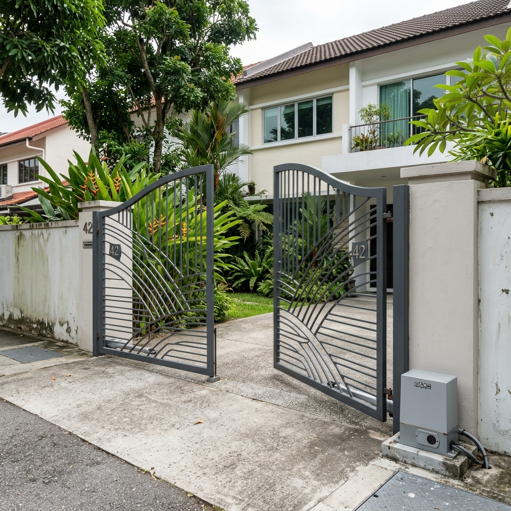
Dual-leaf swing gate opening inward at Singapore terrace houseSwing Gates
A swing gate operates like a door, rotating around a fixed vertical hinge post and sweeping an arc as it opens. Most residential properties in Singapore use single-leaf or dual-leaf swing gates.
The critical planning consideration is the arc of travel. You need clear space — either inside or outside the property — for the gate to complete its full swing. For inward-swinging gates, the vehicle must wait further back from the post to allow the gate to clear. For outward-swinging gates, the arc must not present a hazard to pedestrians on the footpath outside.
As a general rule, gates should swing inward into the premises. Outward swinging is acceptable when there is no pedestrian risk and is confirmed safe by a site assessment.
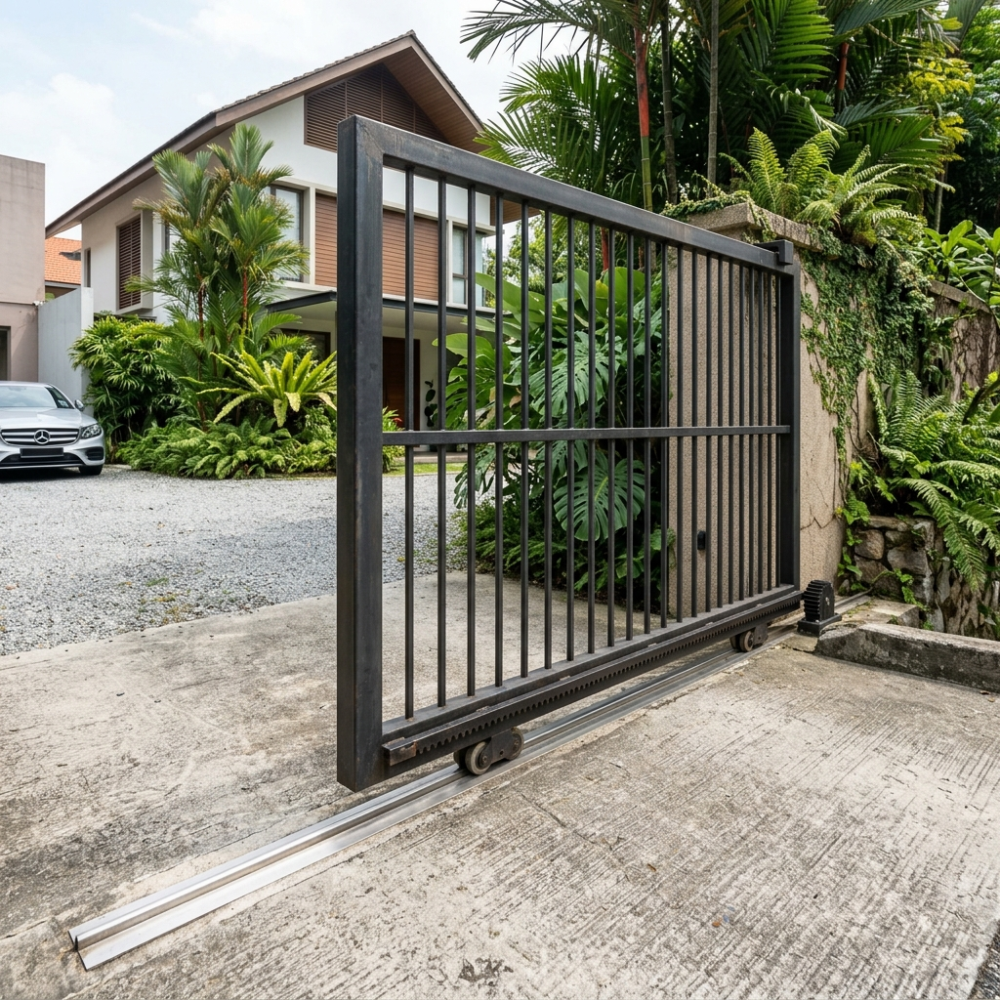
Sliding gate on ground track at Singapore propertySliding Gates
A sliding gate travels horizontally along a ground track parallel to the boundary wall. It does not require a swing arc, making it the preferred solution for properties with limited driveway depth or where inward swing would obstruct a parked vehicle.
The motor is mounted at ground level inside the premises. A steel gear rack fixed to the gate's bottom rail rolls over the motor's drive gear, propelling the gate open or closed. The gate travels on wheels or rollers along the ground track.
The key requirement is a clear run of wall space beside the opening equal to at least the full gate width. A 4-metre opening needs at least 4 metres of clear wall space for the gate to slide into.
Comparison Table
| Feature | Swing Gate | Sliding Gate |
|---|---|---|
| Space needed | Swing arc clearance | Wall run beside opening |
| Best for | Most landed homes | Limited depth driveways |
| Motor mounting | Post or ground (concealed) / post arm | Ground level, inside premises |
| Gate weight limit | Up to ~400kg per leaf | Up to 1,500kg (FAAC 844) |
| Common use | Residential, landed | Residential, industrial, commercial |
3. Motor Selection Guide
Motor selection is driven by gate type and the size and weight of the gate leaf. Using an undersized motor on a heavy gate shortens its life and creates safety risks when the motor cannot reliably stop on an obstacle detection event.
 Concealed swing gate motor installed in gate post housing
Concealed swing gate motor installed in gate post housing
Concealed Swing Motors
For swing gates with a leaf width of up to 2 metres, a concealed motor is the most popular choice for residential properties. The motor unit is buried within the gate post or set into a recessed ground housing, leaving no visible mechanical components. The result is a clean finish that blends into the property's landscape.
We carry the MAG SW200P and Dormer DS2 concealed swing kits for this application. Both are well-suited to Singapore's humidity and rainfall conditions, with a strong track record in landed residential and low-traffic commercial installations.
Concealed motors are ideal for: standard landed property gates, semi-detached and terrace house driveways, and developments where aesthetics are a priority.
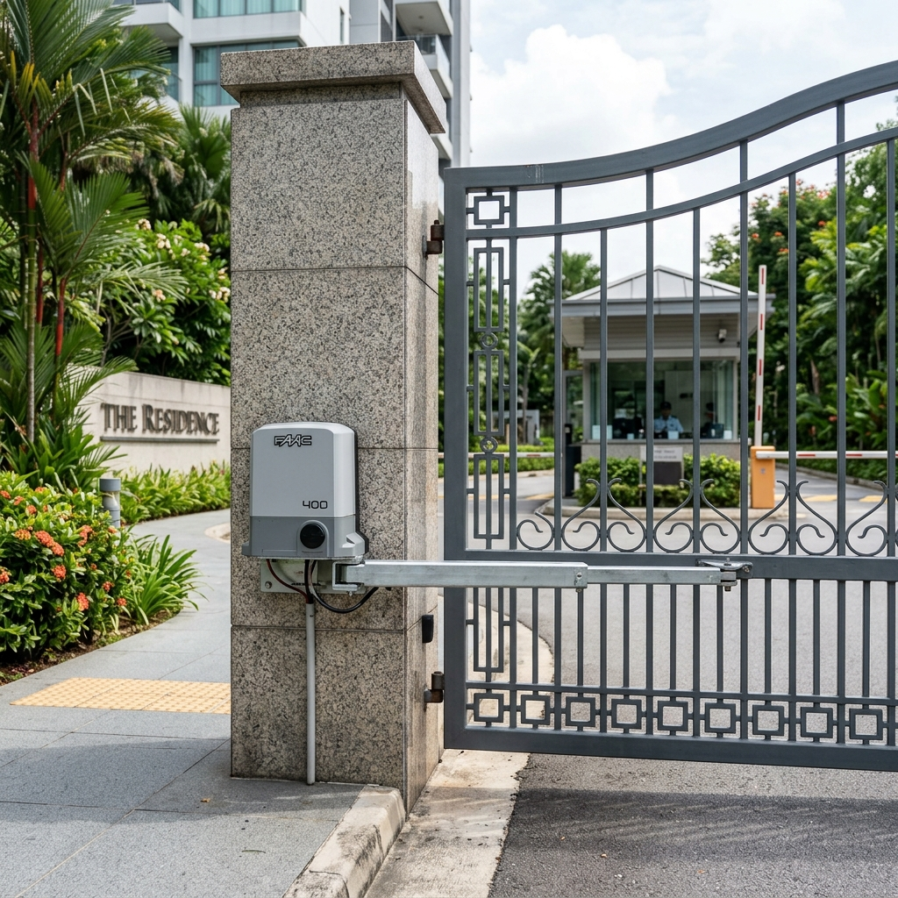
FAAC swing arm motor mounted on gate post at condominium entranceSwing Arm Motors
When the gate leaf exceeds 2 metres, or when the gate material is particularly heavy, a swing arm motor is the correct choice. The motor mounts on a bracket on the gate post and a mechanical arm connects it to the gate leaf. The arm extends as the gate opens and retracts as it closes.
Swing arm motors are rated for higher cycle frequencies, making them suitable for condominiums, gated developments, and commercial properties where the gate operates many times per day.
We carry FAAC and MAG swing arm motors for this application. The FAAC 415 is the benchmark for this category in Singapore — routinely specified for condominium entrance gates and heavy residential installations.
Swing arm motors are ideal for: wide residential gates over 2 metres, condominium main entrance gates, commercial property gates, and high-cycle applications.
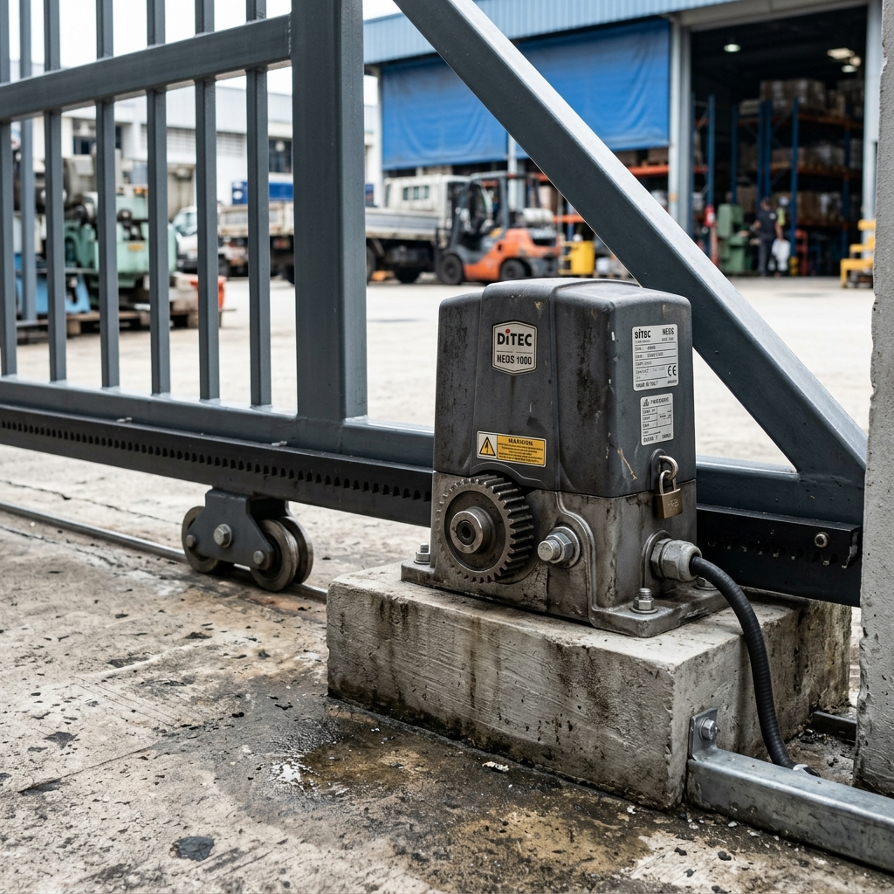
FAAC sliding gate motor with gear rack on heavy steel gateSliding Gate Motors
Sliding gate motors engage the gate via a gear rack running along its bottom rail. The motor is mounted inside the property at ground level.
We carry two FAAC sliding motor models:
- FAAC 746 — handles gates up to 600kg. Suitable for most residential sliding gates and light commercial applications.
- FAAC 844 — handles gates up to 1,500kg. Specified for heavy fabricated steel gates, industrial premises, and high-security commercial applications.
Both support integration with access control systems, loop detectors, and safety devices.
4. Access Control Integration
A gate motor on its own opens and closes on command. An integrated access system decides who is authorised to give that command. Planning the integration at installation stage is always simpler and less expensive than retrofitting it later.
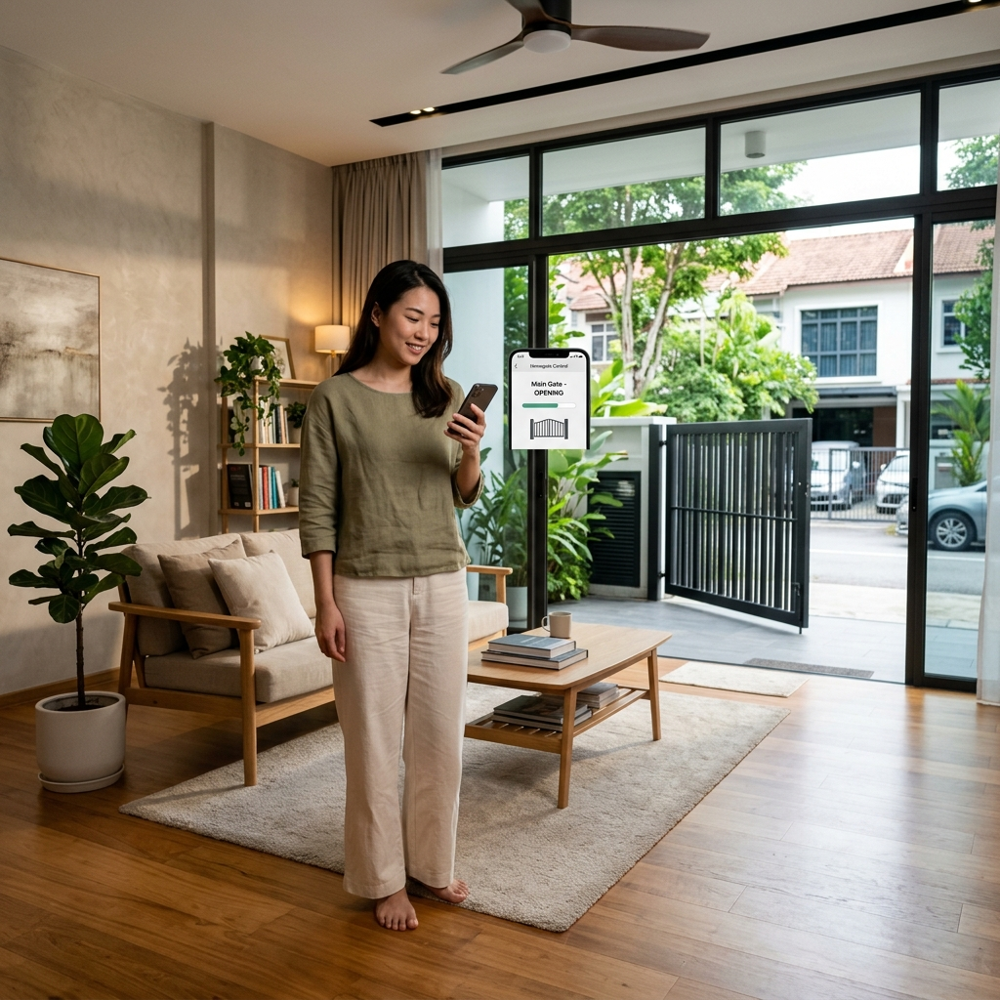
Asian homeowner using smartphone to open gate remotely in SingaporeRF Remote Controls
Standard handheld remotes operate on 433MHz radio frequency. Most control boards can be programmed to recognise additional transmitters and can delete individual remotes if one is lost — without affecting others. For properties with multiple vehicles or residents, specify a control board with adequate remote capacity at installation.
Wi-Fi and Smartphone Control
Wi-Fi modules can be added to most existing gate motors, allowing operation from a smartphone from anywhere in the world. The module connects to your home broadband router and communicates with a mobile app. This is particularly useful for residents who frequently receive deliveries, have domestic helpers managing access, or travel regularly.
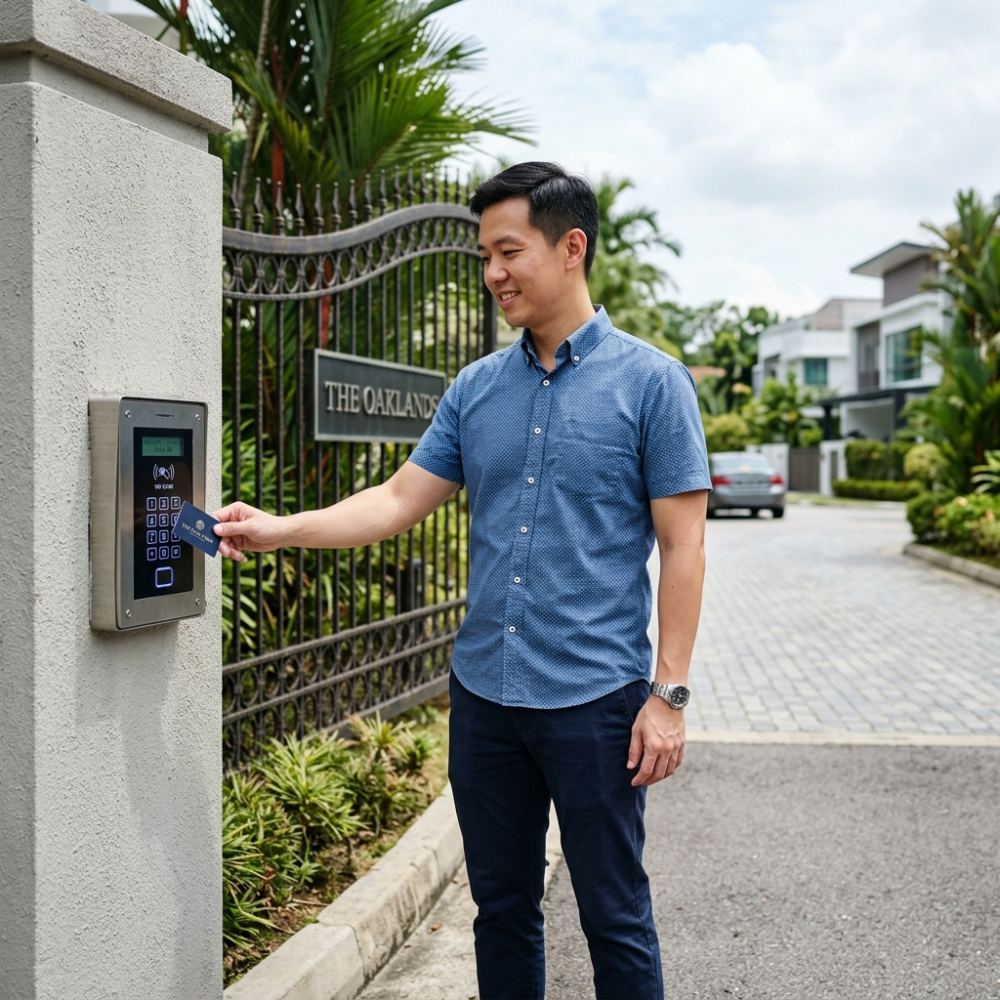
Access card reader mounted on gate post at Singapore gated estateCard and Fob Readers
A card reader mounted on the gate post and wired to the motor's auxiliary input allows residents to tap their access card or fob to trigger the gate — the same way they access a building lobby. This is common in gated communities and commercial properties where entry event logging and card activation control are required.
Intercom Integration
When a visitor presses the call button on the gate intercom and the resident accepts and presses door release on the indoor monitor, that signal is wired directly to the motor's trigger input — opening the gate the same way a remote would. This integration requires planning at installation: the intercom cable typically runs alongside the motor control wiring in a conduit from the gate post to the house.
Loop Detectors
A loop detector buried in the driveway surface detects a vehicle by sensing the inductance change caused by its metal chassis passing over it. Loop detectors serve two functions: a safety function preventing the gate from closing on a vehicle still in the opening, and a convenience function triggering the gate to open automatically as a vehicle approaches from inside the property.
Licence Plate Recognition
LPR cameras read the vehicle's registration plate as it approaches and compare it against an authorised database. If the plate matches, the barrier or gate opens automatically — no physical credential required. LPR systems are increasingly viable for mid-sized condominium developments and private estates with multiple authorised vehicles.
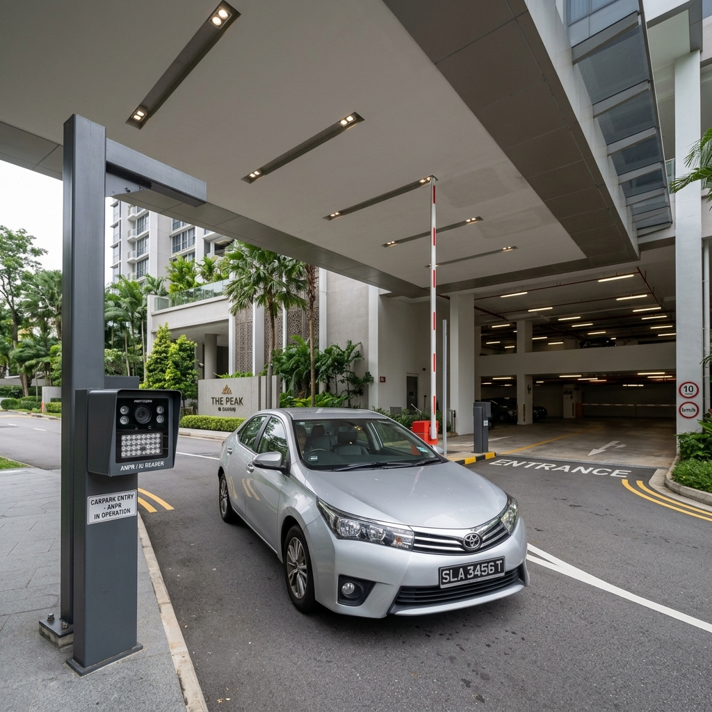
LPR camera reading vehicle plate at Singapore condominium car park entrance5. Car Park Barriers
Car park barriers control vehicle flow at entry and exit points for commercial buildings, condominiums, and industrial premises. Built for high cycle frequency and almost always integrated with access validation, barriers are a different category from residential gate systems — designed for throughput, not perimeter closure.
How a Barrier Works
A barrier gate consists of a motor housing unit mounted beside the lane and a horizontal boom arm that raises and lowers to permit or deny vehicle passage. The boom arm is counterbalanced so the motor does not lift the full arm weight on every cycle, reducing wear and allowing fast cycle times. Standard boom arm lengths range from 3 to 6 metres. For wider lanes, folding arms or dual-barrier configurations are used.
Barrier Speed and Duty Cycle
Opening speed determines how quickly the boom rises. A standard barrier takes 1.5 to 3 seconds. High-speed barriers open in under 1 second for high-volume car parks. Duty cycle refers to the percentage of time the barrier can operate continuously — a 100% duty cycle barrier can open and close without rest, essential for high-volume main entrances where queuing at peak hours is unacceptable.
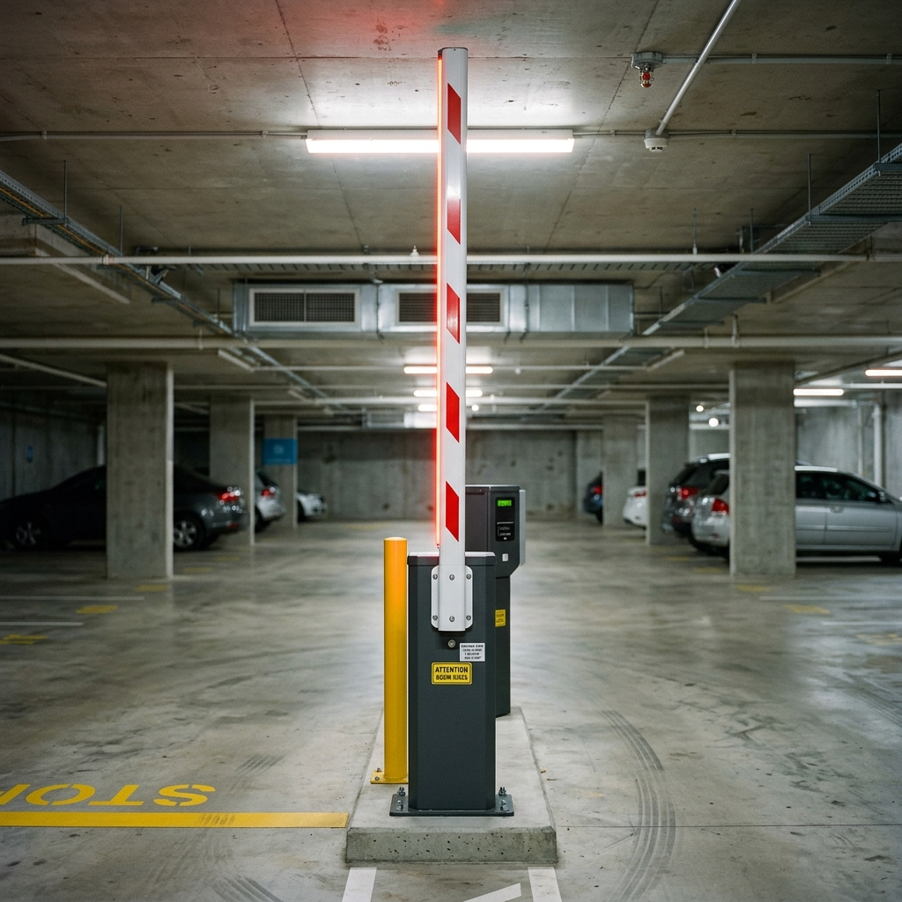
Close-up of NICE barrier boom arm with LED strip raised at car parkNICE Barriers
We carry the NICE range of barriers for condominium and commercial applications. Manufactured in Italy, NICE barriers are specified for high-cycle environments and include integrated LED lighting on the boom arm as standard. NICE barriers are in operation at multiple Singapore developments where we have integrated them directly with access control and LPR systems.
Barrier vs Gate — When to Use Which
A gate provides full perimeter closure — appropriate for private driveways and secured compounds. A barrier boom rises and falls quickly, managing continuous vehicle flow without full lateral closure. Barriers are the operationally correct choice for shared facilities with continuous vehicle traffic. For managed facilities with security coverage, the faster cycle time and lower mechanical stress of a barrier outweighs the reduced physical deterrence compared to a full gate.
6. Safety Devices
A gate motor without safety devices is a liability. A moving gate carries enough force to seriously injure a person or damage a vehicle. Properly specified safety devices stop or reverse the gate before contact occurs. These are standard engineering requirements for any responsibly installed system.
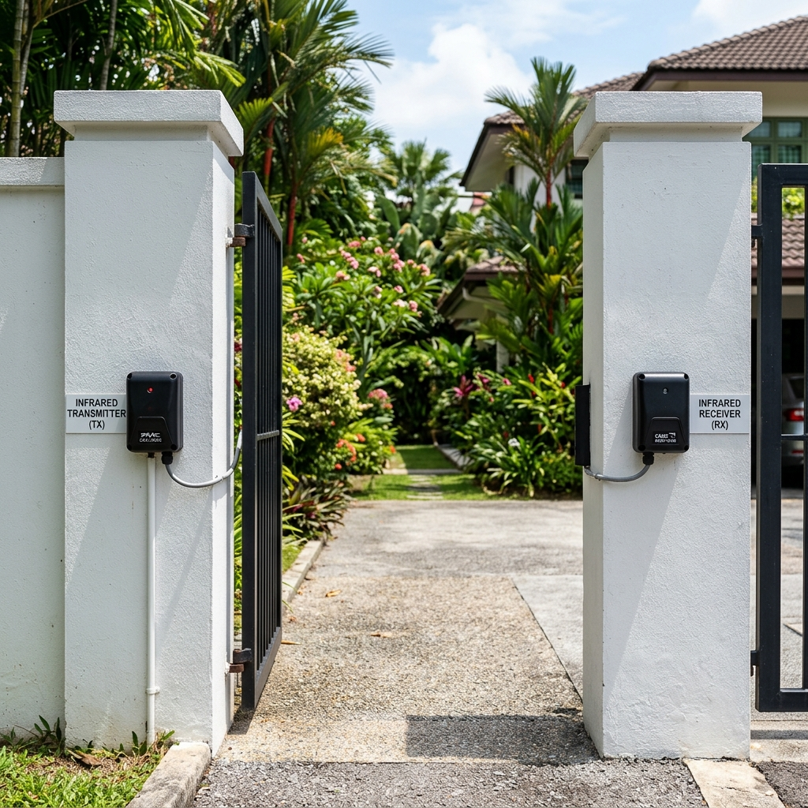
Photocell safety beam transmitter and receiver mounted on gate postsPhotocell Safety Beams
A photocell pair consists of a transmitter and receiver mounted on opposite sides of the gate opening. The transmitter emits a continuous infrared beam. When interrupted — by a person, vehicle, animal, or object — the receiver signals the control board to halt or reverse the gate immediately. Photocells are mounted at bumper height (30–50cm) to detect vehicles, and at pedestrian height (80–100cm) for people detection. Dual-height photocell installations are recommended for any gate that pedestrians may use.
Safety Edges
A safety edge is a rubber-encased pressure sensor fixed to the leading edge of the gate leaf. When compressed by contact with any object, it sends an immediate stop and reverse signal to the control board. Safety edges are the last line of defence — most important on sliding gates where the leading edge travels directly into its path of closure.
Obstacle Detection and Auto-Reverse
Modern control boards detect obstacles through motor current draw monitoring. When the gate strikes something and slows, current draw spikes. The board detects this, classifies it as an obstacle event, and reverses the gate. Sensitivity is programmable and should be calibrated at commissioning for the gate's specific weight and site conditions.
Battery Backup for the Gate
A gate battery backup unit maintains operation for several hours during a power failure. Critical for properties where the vehicle gate is the only exit, and for condominiums where a power outage could affect hundreds of residents. Backup batteries should be tested annually and replaced every two to three years.
Singapore Safety Considerations
Singapore's compact residential plots mean gate swing arcs often come close to public footpaths. Any outward-swinging installation requires a careful site assessment to confirm the arc does not present a hazard to pedestrians, cyclists, or motorcyclists. For condominium and commercial barrier installations, MCST guidelines and relevant authority requirements should be confirmed before specifying the system.
7. Site Assessment & Planning
Every gate installation begins with a site assessment. Gate width, ground conditions, wall structure, power supply routing, and drainage determine which system is viable, which is not, and what civil preparation is required before the motor can go in.
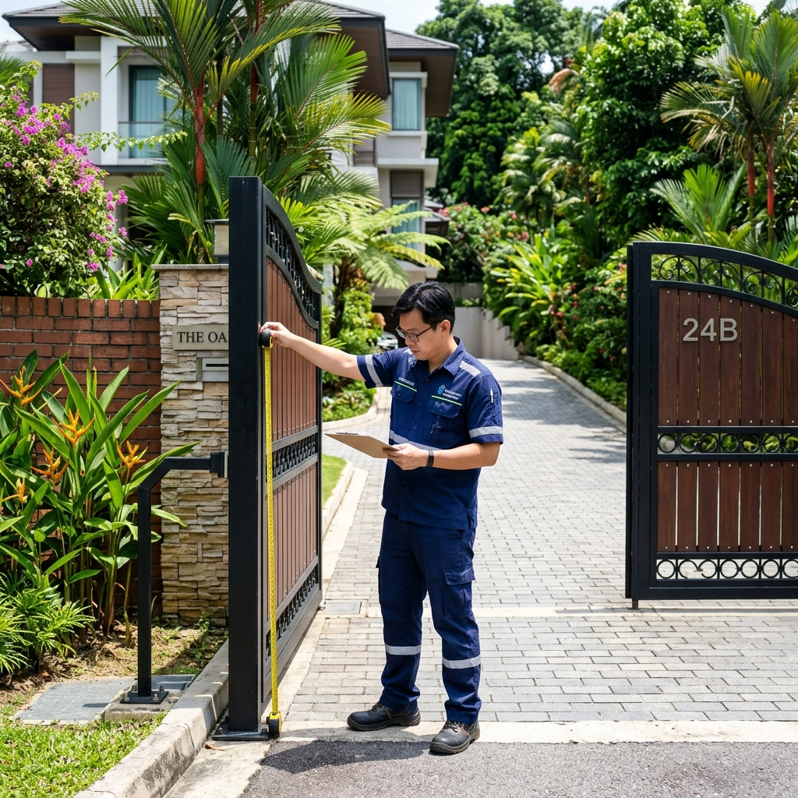
Securevision technician conducting site assessment at Singapore landed property gateGate Opening Width
Measure the clear opening between gate posts — not the overall driveway width. This figure drives motor selection, boom arm length for barriers, and gear rack length for sliding systems. For new constructions, plan a minimum 3-metre clear opening for single-lane vehicle access; 5 to 6 metres for dual-lane or large vehicle access.
Ground Conditions and Track Installation
Sliding gate installations require a straight, level ground track. Significant driveway slopes require civil levelling before installation. The track must be aligned precisely — any deviation causes binding and excessive motor wear. For concealed swing motor installations, a recessed housing must be formed during construction. Retrofitting this into an existing solid concrete post requires significant breaking works.
Power Supply
Gate motors run on 240V AC mains power. A dedicated circuit from the distribution board to the motor housing is required, installed by a licensed electrical worker. The cable route from the distribution board to the gate post is a key planning consideration — for long driveways or concrete surfaces already in place, routing may require surface conduit or core drilling. A domestic extension lead or power point is not a substitute and will void the motor warranty.
Pillar and Post Strength
The gate motor transfers significant dynamic forces to the gate post on every cycle. The post must be structurally adequate to handle these forces over years of operation. Brick pillars without steel reinforcement can crack over time under swing arm motor stress. If your pillars show existing cracks or signs of settlement, have them assessed before proceeding.
Drainage
Ground-mounted motor housings must be positioned to avoid water pooling. In Singapore's tropical rainfall conditions, poor drainage around a concealed motor recess causes water ingress, corrosion, and electrical failure. A properly designed installation will include drainage provisions in or around the motor housing.
8. Investment Guide
Gate system costs in Singapore range widely depending on gate type, motor brand, access integration, and the extent of civil works required. This section gives you a realistic overview so you can plan with accurate expectations.
What Drives the Cost
The motor hardware itself is a relatively predictable cost. The variables that cause the most price variation between quotations are the civil works required, the access integration specified, and the safety device complement. A like-for-like comparison between installers should always be on the full scope — civil preparation, cabling, safety devices, programming, and commissioning — not the motor unit price alone.
Residential Swing Gate — Concealed Motor
For a standard landed property with an existing gate and posts in good condition, a MAG or Dormer concealed motor installation represents the most cost-effective entry point for gate automation. This assumes structurally sound posts, accessible power supply, and no significant civil works.
Residential Swing Gate — FAAC Arm Motor
For gate leaves wider than 2 metres or heavy gate construction requiring the robustness of a FAAC arm motor, the investment is higher. The FAAC 415 is the benchmark product for this category. Longer cable runs may add to the electrical works cost.
Residential or Commercial Sliding Gate
Sliding gate installations typically involve more site preparation than swing gate installations — gear rack fitting, ground track installation, and motor housing positioning. The FAAC 746 covers most residential sliding applications; the FAAC 844 is specified for heavier commercial gates. Civil works can represent a significant share of the total cost if the driveway surface requires cutting or track embedding.
Car Park Barrier System
Barrier systems are quoted on a site-specific basis after a detailed assessment. A single-lane entry and exit barrier with basic card reader access is the starting point; a fully integrated LPR system with multiple lanes and management software is a significantly larger investment. All commercial barrier projects include a full site assessment before quotation.
What to Watch for in Quotations
Be cautious of quotations that list only the motor price and a single line for installation. Ask specifically: what is included in the civil works scope, are safety devices included or are they an add-on, how many remotes are included, and what are the warranty terms for both product and workmanship. Securevision provides itemised quotations so there are no surprises at invoicing.
9. Installation Process
A professional gate motor installation coordinates electrical work, mechanical fitting, civil preparation, and system programming. Understanding the sequence helps you manage the site access and preparation on your end.
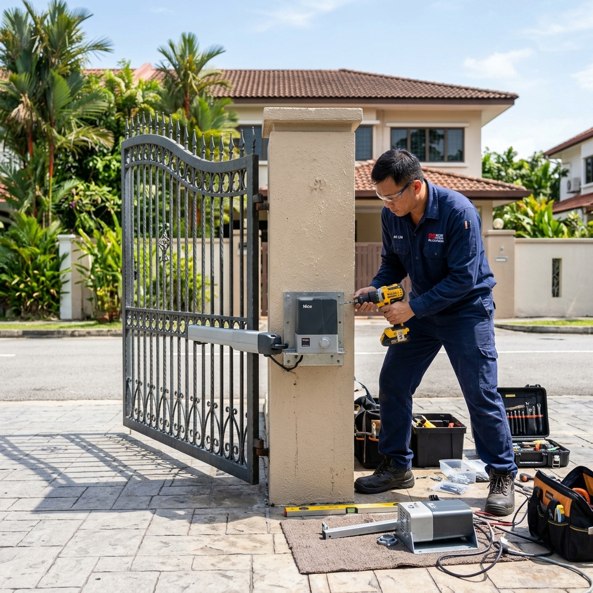
Securevision technician installing gate motor at Singapore propertyBefore any equipment is ordered, a site visit confirms gate dimensions, post condition, ground surface, power supply routing, and civil preparation requirements. Access integration requirements are confirmed at this stage.
If the installation requires a concealed motor recess, ground track embedding, or new cable routing through a concrete surface, civil works are carried out first. Gear racks are fitted to the gate at this stage. Gate posts are assessed for structural condition.
A licensed electrical worker installs the dedicated circuit from the distribution board to the motor housing, in compliance with Singapore's SS638 electrical wiring standards.
The motor unit is mounted in its correct position. Mechanical alignment is verified — the gate must travel smoothly through its full range of motion with the motor engaged before the control board is connected.
Photocells, safety edges, and loop detectors are installed and wired to the motor control board.
The control board is programmed for the specific installation: travel speed, auto-close timer, obstacle detection sensitivity, and remote registration. Every safety function is tested and verified before handover. The homeowner or facilities manager is walked through daily operation and the manual release procedure.
10. Maintenance & Servicing
Gate motors operate outdoors in Singapore's tropical climate — exposed to heat, humidity, UV radiation, and frequent heavy rain. Without periodic maintenance, even a well-specified motor will develop faults prematurely. A simple annual servicing schedule prevents the majority of gate motor failures.
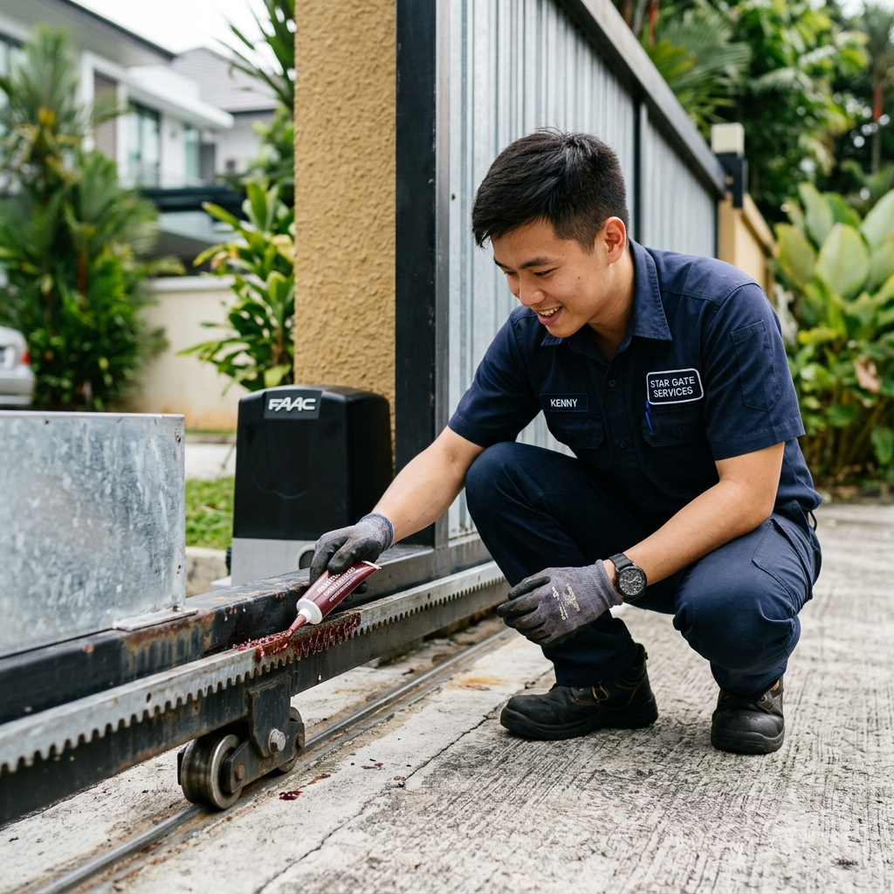
Technician lubricating gate motor gear rack during servicing visitWhat Servicing Covers
A professional gate servicing visit covers: lubrication of all mechanical moving parts, inspection and tightening of all electrical connections, battery backup load test, photocell and safety edge function test, control board diagnostic check for stored fault codes, remote control function check, and physical inspection of the motor housing for water ingress or corrosion.
Lubrication
Gear racks, pivot arms, and roller wheels must be lubricated regularly. Dry or corroded moving parts increase mechanical load on the motor, leading to higher current draw, faster wear, and eventually thermal protection trips. Use the lubricant type specified by the motor manufacturer — typically grease for gear racks and light oil for hinges and pivot points. Do not use WD-40 as a long-term lubricant; it is a water displacer and will wash away quickly in rain.
Battery Backup Maintenance
The backup battery is a sealed lead-acid unit typically housed inside the motor casing. It should be replaced every two to three years regardless of apparent condition. A battery that tests adequate under no-load may fail within minutes when the motor draws operating current. Annual load testing is the only reliable way to assess battery condition.
Recommended Service Intervals
For residential properties with low to moderate daily cycles, annual servicing is the minimum recommended interval. For condominium main gates, commercial properties, and high-cycle installations, six-monthly servicing is advisable. Barrier systems in active car parks should be inspected and serviced quarterly. Securevision provides scheduled maintenance contracts for both residential and commercial gate and barrier systems.
11. Common Faults & Troubleshooting
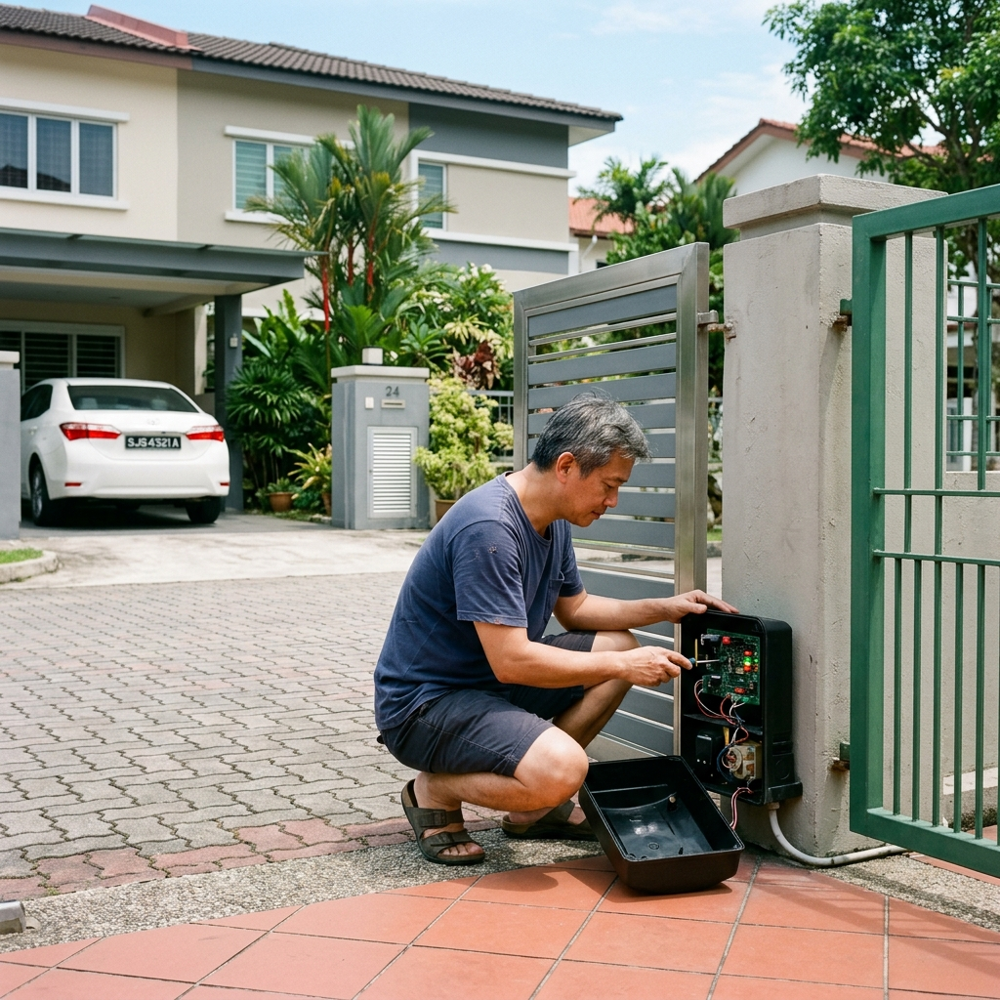
Homeowner checking gate motor control board indicator lightsMost gate motor faults fall into a small number of categories. The checks below will help you determine whether the issue is a simple user fix or requires a technician.
Gate Reverses Immediately After Starting to Open
Almost always a safety device trigger. Check for obstructions in the photocell beam path — a leaf, a spider web, or a vehicle parked too close to the post. Clean the photocell lenses with a dry cloth and test again. If the fault persists, check that the photocell indicator LED is illuminated when the beam is unobstructed. A flashing or unlit indicator suggests misalignment or a failed unit.
Remote Control Not Working
Try the second remote. If the second works, replace the battery in the first. If neither remote works, check that the motor has power by looking for indicator lights on the control board. If the board has no lights, check your circuit breaker and isolator switch. If the board has power but does not respond to any remote, the receiver module may have failed.
Gate Opens Slowly or Incompletely
Typically caused by dry or corroded moving parts, a battery backup in partial failure supplying insufficient voltage, or a motor nearing end of life. Lubricate all moving parts and test again. If the issue persists, a technician should inspect the battery and motor under load.
Gate Makes Grinding or Clicking Noise
Grinding from a sliding gate usually indicates a dry gear rack — clean and re-lubricate the rack and motor drive gear. Clicking during travel often indicates a worn roller wheel on the gate's guide track — inspect wheels for flat spots or cracking and replace if necessary.
Gate Does Not Auto-Close
If the photocell beam is being continuously interrupted by an object in the gate's path, the auto-close will not trigger. Clear the beam path. If the beam is clear and the gate still will not auto-close, the auto-close timer setting may have been reset by a power interruption — a technician can reprogram this.
Gate Is Stuck and Cannot Be Opened
Do not force the gate against a locked motor — this can damage the motor internals, gate leaf, or post. Every motor includes a manual release mechanism — typically a key or lever — that disengages the motor to allow manual operation. This procedure should have been demonstrated at commissioning. If you are unsure how to use your manual release, refer to the motor documentation or contact us.
12. Brands We Carry & Technical FAQ
We select the brands we carry based on reliability in Singapore's operating conditions, spare parts availability, and the quality of technical support. We do not stock every brand on the market — we stock the ones we are confident standing behind.
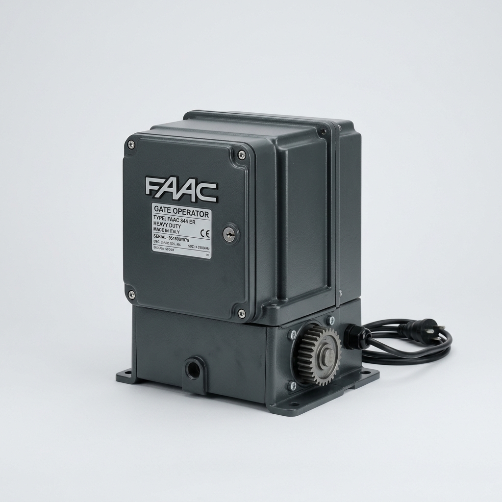
FAAC Group
Country: Italy
Range: Swing arm motors (FAAC 415), sliding motors (FAAC 746, FAAC 844)
Best for: Condominium gates, heavy residential gates, commercial sliding gates, high-cycle applications
Why we carry it: FAAC is the benchmark for heavy-duty gate automation in Singapore. Built to commercial standards with a global spare parts network.

MAG Automation
Country: Malaysia
Range: Concealed swing motors (MAG SW200P), swing arm kits (MAG Wing 303)
Best for: Standard residential swing gates, aesthetics-focused installations, moderate-cycle applications
Why we carry it: MAG has a strong regional track record and is well-suited to Singapore's climate. The SW200P delivers clean finishes on residential gates with reliable performance.

Dormer DS-Series
Country: Malaysia
Range: Concealed swing gate kits (Dormer DS2)
Best for: Residential concealed swing gate installations where a clean post finish is the priority
Why we carry it: Dormer is a specialist concealed motor with an established installer base in Singapore. The DS2 kit is straightforward to install and service.
NICE (Italy)
Country: Italy
Range: Car park barriers (NICE Wide series)
Best for: Condominium car parks, commercial building barriers, managed access lanes
Why we carry it: NICE barriers are built for high-cycle durability with integrated LED boom arm lighting as standard. Proven in multiple Singapore developments.
Frequently Asked Questions
Q1: Can I add a motor to my existing gate without replacing the gate itself?
In most cases yes. Provided the gate is structurally sound and the posts are in good condition, a motor can be added to an existing gate. Posts and hinges will be inspected at the site assessment. If the gate is warped, hinges are worn, or posts are compromised, remedial work will be required first.
Q2: My current gate motor is very old. Can I replace just the motor and keep everything else?
Usually yes for the motor unit. The control board, photocells, and remotes are typically replaced as part of the motor replacement since they are often matched to the original motor's specifications. The gate leaf, posts, and tracks can generally be reused if they are in serviceable condition.
Q3: How long does a gate motor last?
A well-maintained residential motor from a quality brand should last 10 to 15 years. High-cycle applications — condominium gates, commercial barriers — have shorter expected lifespans of 5 to 10 years. The motor's duty cycle rating is the key indicator: a motor used well beyond its rated daily cycles will wear proportionally faster.
Q4: Can my gate be operated during a power failure?
Yes, if the installation includes a battery backup unit. Every gate installation we carry out includes battery backup as standard. Even with backup power, the manual release procedure should be known to all household members as a failsafe.
Q5: Is a gate permit required in Singapore?
Residential gate installations on private landed property do not typically require a separate gate permit. Electrical works must be carried out by a licensed electrical worker. For condominiums and commercial properties, the building management or relevant authority should be consulted before works commence.
Q6: My gate reverses every time it tries to close. What is wrong?
The most likely cause is a photocell beam interruption. Check for obstructions in the beam path. If the path is clear, the photocell may be misaligned or faulty — a technician can diagnose this on a service call.
Q7: Can I install the gate motor myself?
The mechanical fitting of some arm motor kits may be within a competent person's capability. However, the electrical connection to the mains supply must be carried out by a licensed electrical worker under Singapore regulations. We advise against DIY installation for the full system — improper installation of safety devices or control board programming can create hazards that are not immediately obvious.
Q8: What is the difference between a swing arm motor and a concealed motor?
A concealed motor is hidden within the gate post or ground housing — no visible mechanical components, the gate appears to move on its own. A swing arm motor is mounted visibly on the post with an arm connecting to the gate leaf. Concealed motors suit gates up to 2 metres wide. Swing arm motors handle wider and heavier gates.